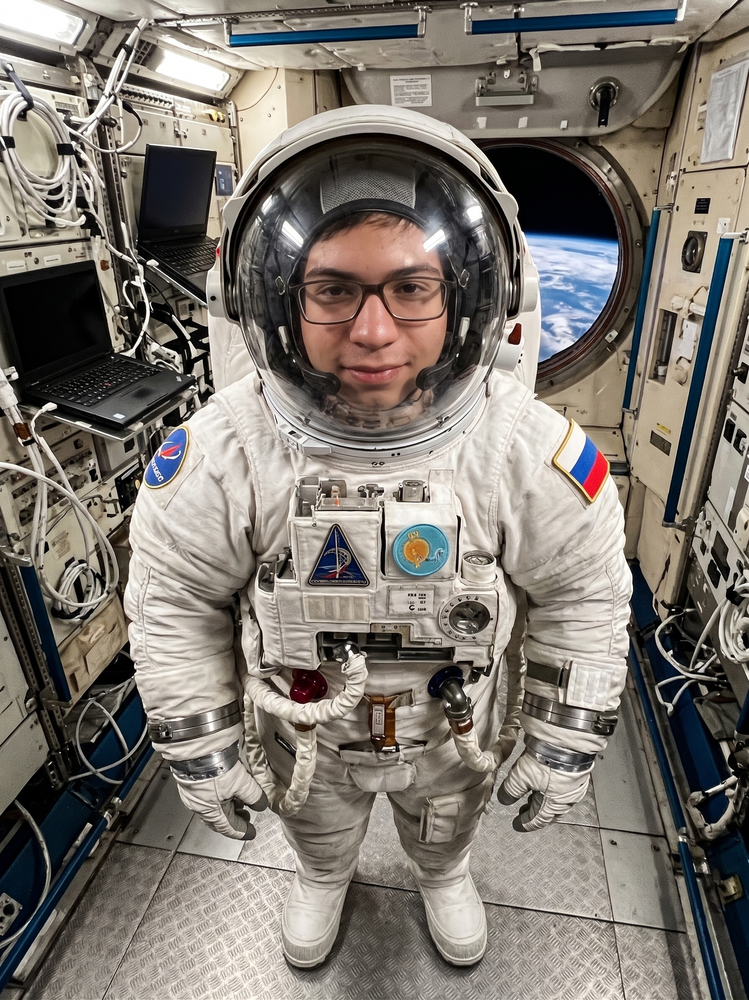

Сириус
Созвездие: Большой Пёс
Яркость: −1,46 mag
Космический энтузиаст и астроном-любитель

Люблю изучать космос, наблюдать за звёздами и узнавать, как устроена Вселенная.
Несколько ярких объектов, с которых можно начать знакомство с ночным небом. Яркость указана в видимых звёздных величинах.
Созвездие: Большой Пёс
Яркость: −1,46 mag
Созвездие: Лира
Яркость: +0,03 mag
Созвездие: Волопас
Яркость: −0,05 mag
Созвездие: Орион
Яркость: 0 - 1,3 mag
≈ 13,8 млрд
лет — современная оценка возраста Вселенной
299 792
км/с в вакууме
149,6 млн
км — среднее расстояние между Землёй и Солнцем